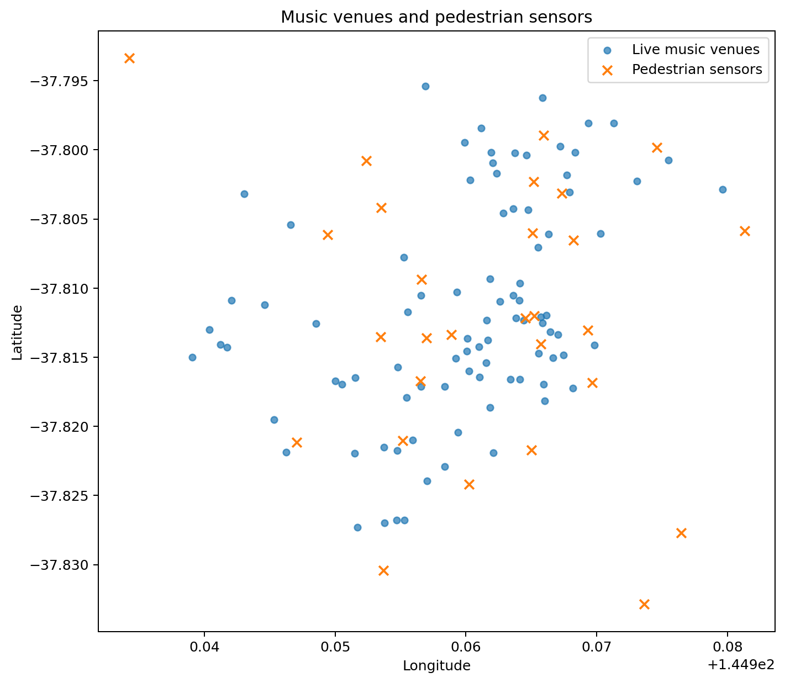
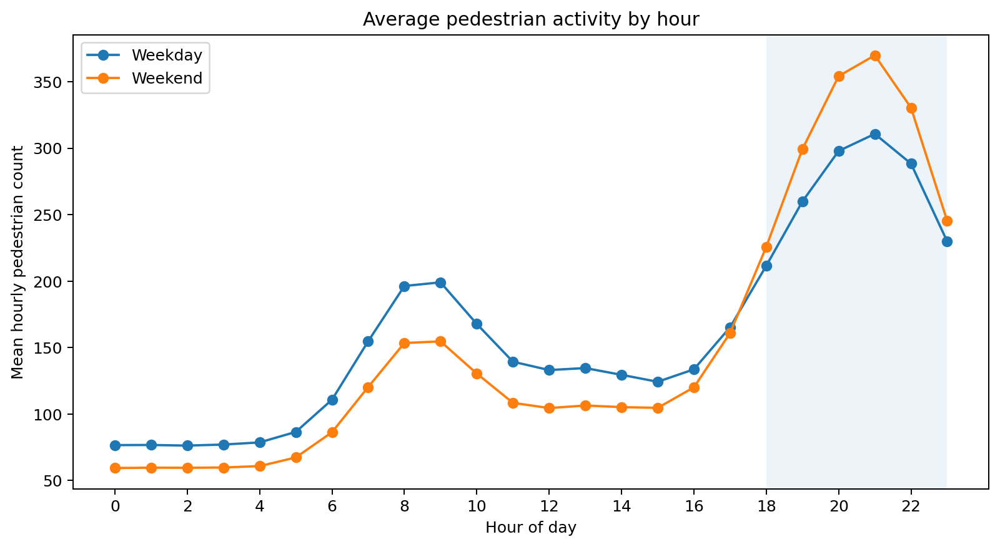
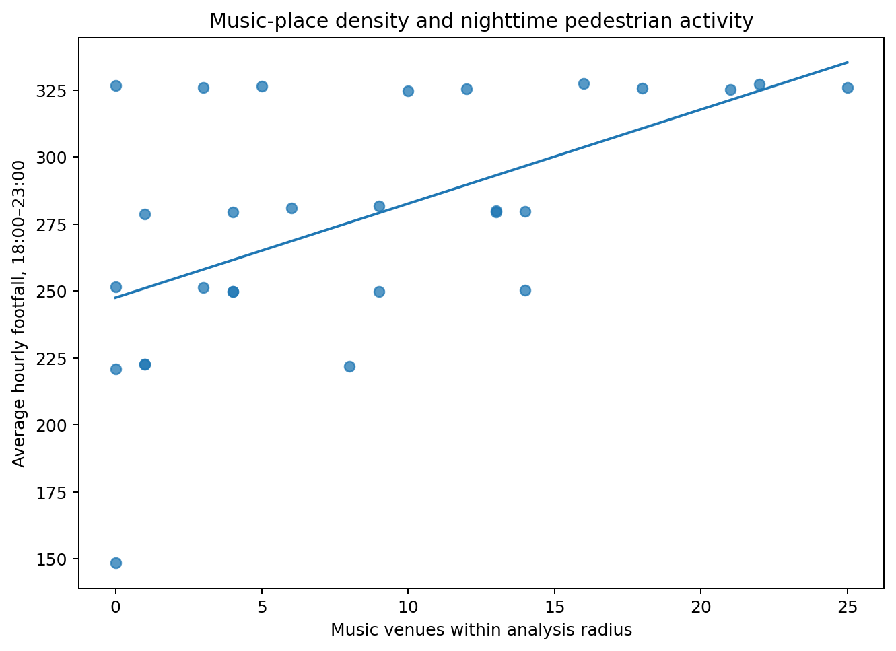

这份报告用于验证“音乐空间—夜间人流—消费场景”分析链路。所有数值来自程序生成的合成数据，不代表墨尔本真实情况。



| cluster_id | venue_count | venue_type_count | mean_context_score | median_night_footfall | cafe_seats_median | bar_capacity_median | centroid_latitude | centroid_longitude | district_label |
|---|---|---|---|---|---|---|---|---|---|
| 0 | 75 | 5 | 56.0 | 281.6 | 1228.0 | 1550.0 | -37.8 | 145.0 | Music district 1 |
| 2 | 7 | 2 | 12.8 | 221.9 | 646.0 | 541.0 | -37.8 | 144.9 | Music district 3 |
| 1 | 3 | 2 | 21.4 | 279.4 | 416.0 | 877.0 | -37.8 | 145.0 | Music district 2 |
该得分由音乐密度、夜间人流和周边餐饮/酒吧容量的百分位组合而成，仅用于描述和排序，不代表消费金额。
| Venue | Type | Context score | Nearby music venues | Night footfall | Cafe seats | Bar capacity |
|---|---|---|---|---|---|---|
| Synthetic Central Venue 29 | Bar | 94.0 | 23 | 327.1 | 2083.0 | 2154.0 |
| Synthetic Central Venue 17 | Performance space | 92.2 | 23 | 327.1 | 2016.0 | 1842.0 |
| Synthetic Central Venue 28 | Bar | 91.4 | 23 | 327.1 | 1939.0 | 1823.0 |
| Synthetic Central Venue 3 | Performance space | 91.1 | 18 | 327.1 | 2408.0 | 2614.0 |
| Synthetic Central Venue 11 | Theatre | 90.0 | 18 | 327.1 | 2259.0 | 2323.0 |
| Synthetic Central Venue 12 | Nightclub | 88.7 | 18 | 327.1 | 2259.0 | 2036.0 |
| Synthetic Central Venue 20 | Nightclub | 85.1 | 25 | 325.7 | 1693.0 | 2658.0 |
| Synthetic Central Venue 21 | Bar | 84.5 | 22 | 325.7 | 1850.0 | 2658.0 |
本项目没有真实交易或商户营业额数据，因此不能据此断言音乐场所带来多少消费增长，也不能把空间相关性解释为因果关系。真实数据运行时还应首先报告传感器覆盖率，并仅对覆盖充分的区域展示夜间活力。